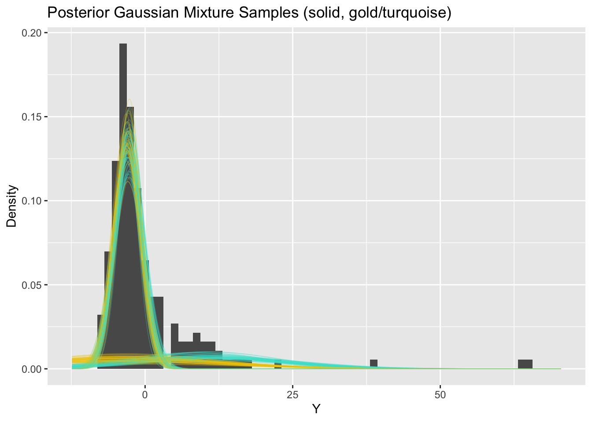
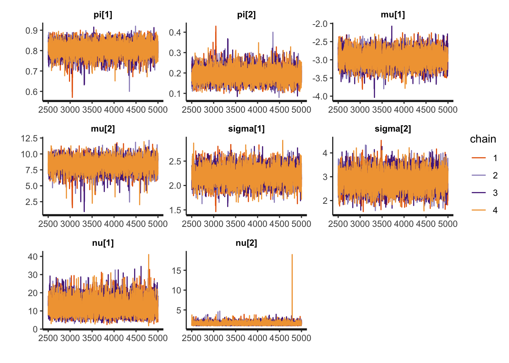
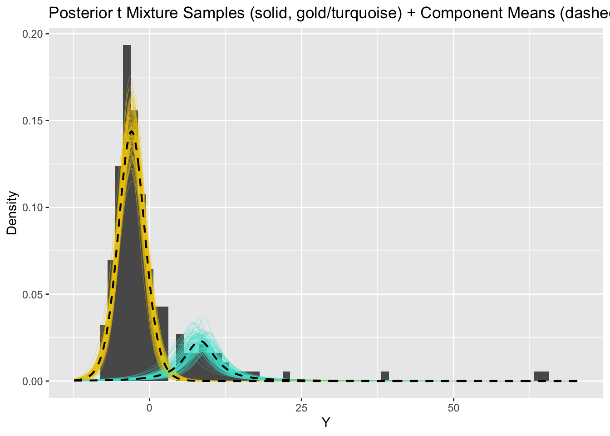
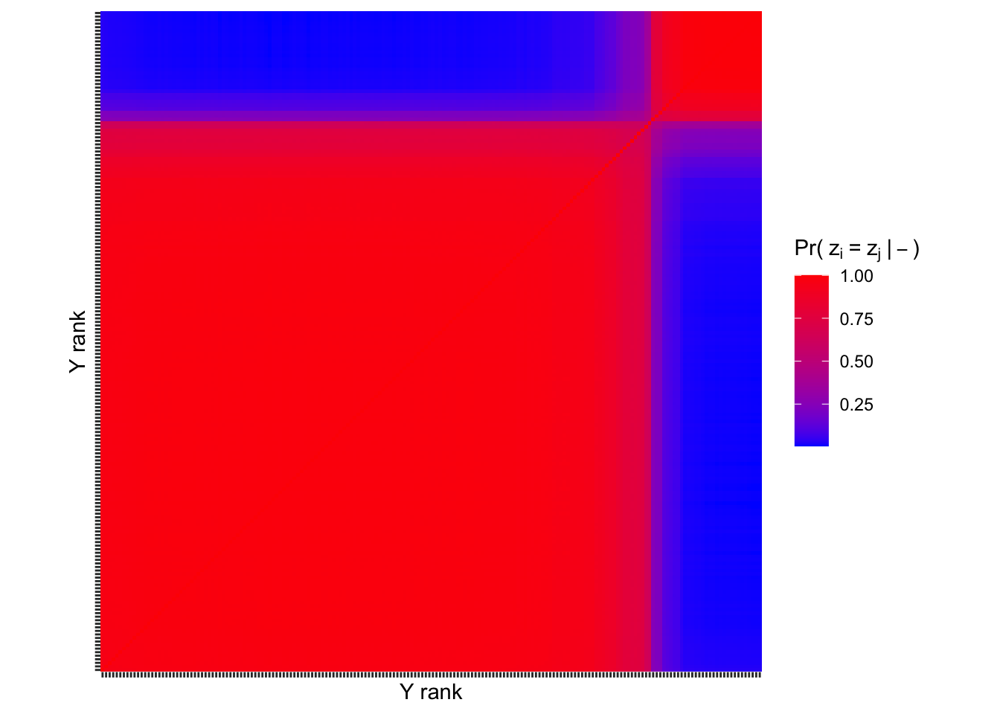
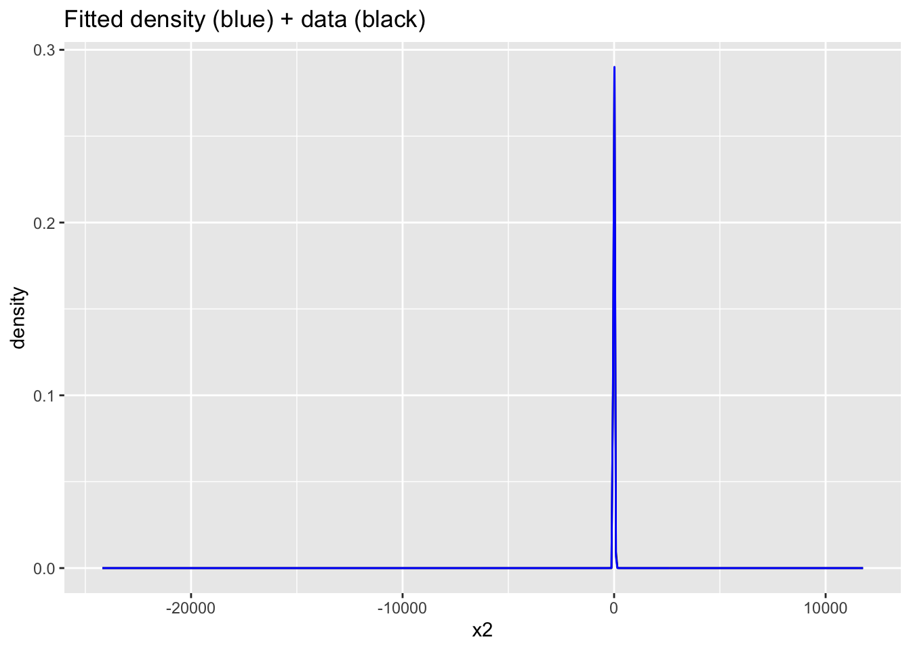
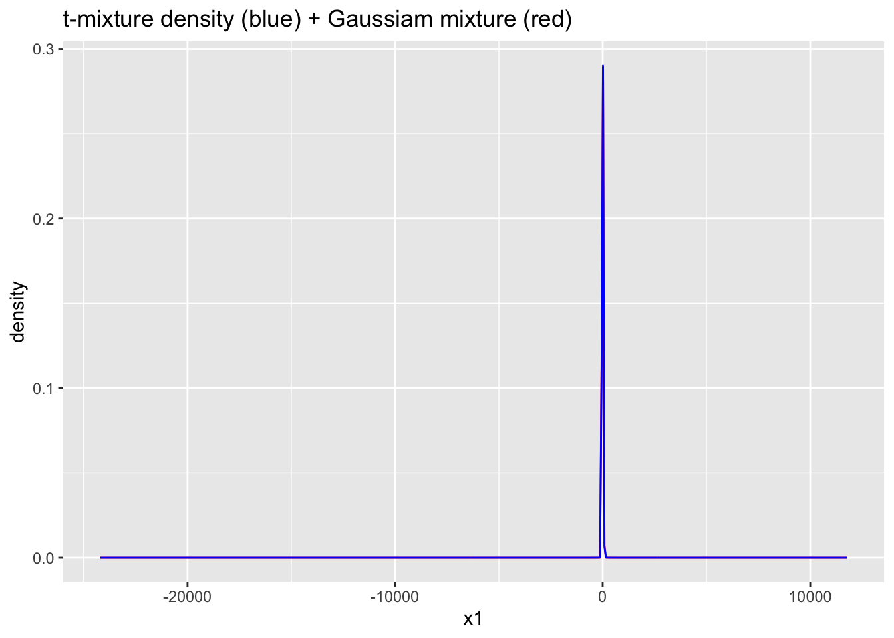

library(tidyverse) # data wrangling and visualization
library(knitr) # format output
library(rstan) # Stan
library(bayesplot) # figures for post Stan inference
library(loo) # model comparison
library(patchwork) # combining figures
library(extraDistr) # student-t density function
options(mc.cores=4)AE 10: Bayesian Clustering
Clustering patients based on their ED length of stay
Due date
Application exercises (AEs) are submitted by pushing your work to the relevant GitHub repo. AEs from Tuesday lectures should be submitted by Friday by 11:59pm ET, and AEs from Thursday lectures should be submitted by Sunday at 11:59pm ET. Because AEs are intended for in-class activities, there are no extensions given on AEs.
- Final
.qmdand.pdffiles pushed to your GitHub repo - Note: For homeworks and exams, you will also be required to submit your final
.pdffile submitted on Gradescope
Getting Started
Clone the repo & start new RStudio project
- Go to the course organization at github.com/biostat725-sp25 organization on GitHub.
- Click on the repo with the prefix ae-10-. It contains the starter documents you need to complete the AE.
- Click on the green CODE button, select Use SSH (this might already be selected by default, and if it is, you’ll see the text Clone with SSH). Click on the clipboard icon to copy the repo URL.
- See the HW 00 instructions if you have not set up the SSH key or configured git.
- In RStudio, go to File \(\rightarrow\) New Project \(\rightarrow\) Version Control \(\rightarrow\) Git.
- Copy and paste the URL of your assignment repo into the dialog box Repository URL. Again, please make sure to have SSH highlighted under Clone when you copy the address.
- Click Create Project, and the files from your GitHub repo will be displayed in the Files pane in RStudio.
- Click
ae-10.qmdto open the template Quarto file. This is where you will write up your code and narrative for the AE.
R packages
We will begin by loading R packages that we will use in this AE.
Data
This AE will revisit data from the MIMIC-IV-ED Demo. As a reminder, MIMIC-IV-ED is a publicly accessible database of over 400,000 emergency department (ED) admissions to the Beth Israel Deaconess Medical Center between 2011 and 2019. The emergency department (ED) is a high demand environment requiring rapid triaging of patients for further care.
For the AE, we will use data on patient lengths of stay, los. The data are available in your repo (ed_los.rds).
ed_los <- readRDS("ed_los.rds")ggplot(ed_los, aes(x = los)) +
geom_histogram() +
labs(x = "ED Length of Stay (hours)",
y = "Count") 
Note the multimodality. As described in the lecture, our goal will be to identify subgroups within these data.
Model Goals
Compare fit from two models
\[\begin{align*} p\left(Y_i\mid \pi, \mu, \sigma\right) &= \sum_{h=1}^2 \pi_h N\left(Y_i; \mu_h, \sigma^2_h\right) \\ \mu_h &\sim N\left(0,10^2\right) \\ \sigma_h &\sim \text{Exp}\left(1\right) \\ \pi_1\sim\text{Unif}(0,1), &\quad\quad \pi_2=1-\pi_h \end{align*}\]
and
\[\begin{align*} p\left(Y_i\mid \pi, \mu, \sigma\right) &= \sum_{h=1}^2 \pi_h t_{\nu_h}\left(Y_i; \mu_h, \sigma^2_h\right) \\ \mu_h &\sim N\left(0,10^2\right) \\ \sigma_h &\sim N_+\left(2, 0.5^2\right) \\ \nu_h &\sim \text{Ga}\left(5, 0.5\right) \\ \pi_1\sim\text{Unif}(0,1), &\quad\quad \pi_2=1-\pi_h \end{align*}\]
Fitting the Model
Because clustering is generally an unsupervised task, no covariates are used to fit the model. We will use a centered outcome \(Y_i - \bar{Y}\) to simplify prior specification. In addition to the outcome \(Y\), we must specify the number of components (clusters) \(k\) used to fit the mixture. The Stan data object is given by
stan_data <- list(Y = (ed_los$los - mean(ed_los$los)),
n = length(ed_los$los),
k = 2)We will now fit the model and print the posterior summaries and MCMC convergence diagnostics.
Gaussian components:
mixture_gauss <- stan_model("mixture1.stan")
fit_mixture_k2g <- sampling(mixture_gauss, data=stan_data, iter=5000, chains=4, control=list("adapt_delta"=0.99))
print(fit_mixture_k2g, pars = c("pi", "mu", "sigma"))Inference for Stan model: anon_model.
4 chains, each with iter=5000; warmup=2500; thin=1;
post-warmup draws per chain=2500, total post-warmup draws=10000.
mean se_mean sd 2.5% 25% 50% 75% 97.5% n_eff Rhat
pi[1] 0.37 0.17 0.24 0.16 0.21 0.25 0.47 0.83 2 6.35
pi[2] 0.63 0.17 0.24 0.17 0.53 0.75 0.79 0.84 2 6.35
mu[1] -3.17 0.09 0.51 -4.49 -3.37 -3.07 -2.86 -2.49 33 1.05
mu[2] 0.45 3.96 5.69 -3.17 -2.86 -2.67 -0.50 13.08 2 5.14
sigma[1] 13.25 4.48 6.46 2.09 9.72 16.12 17.47 20.11 2 4.97
sigma[2] 5.03 3.28 4.68 2.03 2.27 2.43 5.04 14.78 2 7.56
Samples were drawn using NUTS(diag_e) at Sat Mar 22 13:54:38 2025.
For each parameter, n_eff is a crude measure of effective sample size,
and Rhat is the potential scale reduction factor on split chains (at
convergence, Rhat=1).Traceplots and pair plots of posterior samples reveal bimodality:
rstan::traceplot(fit_mixture_k2g, pars = c("pi", "mu", "sigma"))
pairs(fit_mixture_k2g, pars = c("mu", "sigma"))

Posterior means are not meaningful in this case
Student t components:
mixture_t <- stan_model("mixture2.stan")
fit_mixture_k2t <- sampling(mixture_t, data=stan_data, iter=5000, chains=4)
print(fit_mixture_k2t, pars = c("pi", "mu", "sigma", "nu"))Inference for Stan model: anon_model.
4 chains, each with iter=5000; warmup=2500; thin=1;
post-warmup draws per chain=2500, total post-warmup draws=10000.
mean se_mean sd 2.5% 25% 50% 75% 97.5% n_eff Rhat
pi[1] 0.81 0.00 0.04 0.73 0.79 0.81 0.83 0.87 5567 1
pi[2] 0.19 0.00 0.04 0.13 0.17 0.19 0.21 0.27 5567 1
mu[1] -2.96 0.00 0.22 -3.39 -3.10 -2.96 -2.81 -2.53 7318 1
mu[2] 8.30 0.02 1.10 6.03 7.66 8.35 9.01 10.28 4306 1
sigma[1] 2.20 0.00 0.17 1.88 2.09 2.20 2.31 2.55 5987 1
sigma[2] 2.82 0.00 0.40 2.06 2.55 2.81 3.09 3.64 6745 1
nu[1] 11.98 0.04 4.44 5.14 8.75 11.38 14.57 22.22 9860 1
nu[2] 1.54 0.00 0.43 1.03 1.25 1.46 1.74 2.50 9286 1
Samples were drawn using NUTS(diag_e) at Sat Mar 29 12:52:38 2025.
For each parameter, n_eff is a crude measure of effective sample size,
and Rhat is the potential scale reduction factor on split chains (at
convergence, Rhat=1).rstan::traceplot(fit_mixture_k2t, pars = c("pi", "mu", "sigma", "nu"))

Visualizing \(\text{Pr}(z_i=z_j|-)\)
For t mixture:

Exercises
Exercise 1
Revisit the Gaussian mixture model fit above. Diagnostic criteria indicate that the posterior samples collected may not faithfully represent the true posterior. Traceplots and pair plots indicate that different chains explored different regions of the posterior. Discuss the following: Why might the true posterior be multimodal? Is this a problem with the model or with the way we compute the posterior?
Answer:
Points students may consider: - Without the ordered constraint, the model is trivially multimodal with modes corresponding to switched labels. - The ordered constraint on \(\mu\) is intended to resolve non-identifiability (label switching). If, under the data generating process \(\mu_1\approx\mu_2\) however, then the constraint fails to prevent switching between the variances. I.e., ordering \(\mu\) does not resolve label switching in a variance mixture of Gaussians model. - Notice that the chains do not mix over modes—each chain is apparently stuck in one of the two modes. Hence, no single chain is actually exploring the disjoint region of high posterior probability. This is a limitation of the posterior computation method. - If chains did mix over modes, however, summarizing the posterior would be nontrivial.
Exercise 2
Extend the Gaussian mixture model Stan code to simulate data Y_pred under the posterior predictive. Compare the density of predicted data to the empirical density of observed data. Do you observe anything surprising?
Answer:
This is a bit tricky because the posterior probability that large \(Y\) comes from the small component is numerically zero.
Hopefully students not that many of the marginal posteriors for Y_pred are well-behaved in terms of ESS and Rhat. Maybe we can estimate the density well without nailing the parameters. The density overlay is reasonable with obvious problems around the interval \((5,15)\).
# add code heregenerated quantities {
array[n] real Y_pred;
matrix[n,k] lPrZik;
int<lower=1, upper=k> z[n];
for (i in 1:n){
for (h in 1:k){
lPrZik[i,h] = log(pi[h]) + normal_lpdf(Y[i] | mu[h], sigma[h]);
}
lPrZik[i] -= log(sum(exp(lPrZik[i])));
// Numerical zeros due to light tails complicate predictive inference
if (is_inf(exp(lPrZik[i,1]))){
z[i] = 1;
Y_pred[i] = normal_rng(mu[z[i]], sigma[z[i]]);
continue;
}
if (is_inf(exp(lPrZik[i,2]))){
z[i] = 2;
Y_pred[i] = normal_rng(mu[z[i]], sigma[z[i]]);
continue;
}
z[i] = categorical_rng(exp(lPrZik[i]'));
Y_pred[i] = normal_rng(mu[z[i]], sigma[z[i]]);
}
}Ex2mod <- stan_model("Ex2.stan")
Ex2fit <- sampling(Ex2mod, data=stan_data, chains=4, iter=4000,
control=list("adapt_delta"=0.99))
Ex2samps <- extract(Ex2fit)
plot(density(Ex2samps$Y_pred[Ex2samps$Y_pred>-10 & Ex2samps$Y_pred<100]))ggplot(data.frame(x1=c(Ex2samps$Y_pred), x2=stan_data$Y)) +
geom_density(aes(x=x1), bw=1, color="blue") +
geom_density(aes(x=x2), bw=1) +
ggtitle("Fitted density (blue) + data (black)")
ggplot(data.frame(x1=c(Ex2samps$Y_pred), x2=stan_data$Y)) +
geom_density(aes(x=x1), bw=1, color="blue") +
geom_density(aes(x=x2), bw=1) +
xlim(min(stan_data$Y)-1, max(stan_data$Y)+1) +
ggtitle("Fitted density (blue) + data (black)", subtitle = "Truncated to sample range")Warning: Removed 114357 rows containing non-finite outside the scale range
(`stat_density()`).
Exercise 3
Extend the student t mixture model Stan code to simulate data Y_pred under the posterior predictive. Compare to the predicted data under the Gaussian mixture model and comment on any similarities/differences.
Answer:
Probabilities are better behaved here thanks to the heavy tails. The predictive density has extreme tails (unsurprising given \(\nu_1\approx 1.5\)). The tails are outlandish in context. However, the mode at \((5,15)\) is better modeled.
# add code heregenerated quantities {
array[n] real Y_pred;
matrix[n,k] lPrZik;
int<lower=1, upper=k> z[n];
for (i in 1:n){
for (h in 1:k){
lPrZik[i,h] = log(pi[h]) + student_t_lpdf(Y[i] | nu[h], mu[h], sigma[h]);
}
lPrZik[i] -= log(sum(exp(lPrZik[i])));
z[i] = categorical_rng(exp(lPrZik[i]'));
Y_pred[i] = student_t_rng(nu[z[i]], mu[z[i]], sigma[z[i]]);
}
}Ex3mod <- stan_model("Ex3.stan")
Ex3fit <- sampling(Ex3mod, data=stan_data, chains=4, iter=4000)
Ex3samps <- extract(Ex3fit)
plot(density(Ex3samps$Y_pred[Ex3samps$Y_pred>-10 & Ex3samps$Y_pred<100]))ggplot(data.frame(x1=c(Ex3samps$Y_pred), x2=stan_data$Y)) +
geom_density(aes(x=x2), bw=1) +
geom_density(aes(x=x1), bw=1, color="blue") +
ggtitle("Fitted density (blue) + data (black)")
ggplot(data.frame(x1=c(Ex3samps$Y_pred), x2=stan_data$Y)) +
geom_density(aes(x=x1), bw=1, color="blue") +
geom_density(aes(x=x2), bw=1) +
xlim(min(stan_data$Y)-1, max(stan_data$Y)+1) +
ggtitle("Fitted density (blue) + data (black)", subtitle = "Truncated to sample range")Warning: Removed 29799 rows containing non-finite outside the scale range
(`stat_density()`).
ggplot(data.frame(x1=c(Ex2samps$Y_pred), x2=c(Ex3samps$Y_pred))) +
geom_density(aes(x=x1), bw=1, color="red") +
geom_density(aes(x=x2), bw=1, color="blue") +
ggtitle("t-mixture density (blue) + Gaussiam mixture (red)")
ggplot(data.frame(x1=c(Ex2samps$Y_pred), x2=c(Ex3samps$Y_pred))) +
geom_density(aes(x=x1), bw=1, color="red") +
geom_density(aes(x=x2), bw=1, color="blue") +
ggtitle("t-mixture density (blue) + Gaussiam mixture (red)", subtitle = "Truncated to sample range") +
xlim(min(stan_data$Y)-1, max(stan_data$Y)+1) Warning: Removed 114357 rows containing non-finite outside the scale range
(`stat_density()`).Warning: Removed 29799 rows containing non-finite outside the scale range
(`stat_density()`).
Important
To submit the AE:
- Render the document to produce the PDF with all of your work from today’s class.
- Push all your work to your AE repo on GitHub. You’re done! 🎉